特許原料使用(認識番号-100109553)高齢者専用サプリメント

- 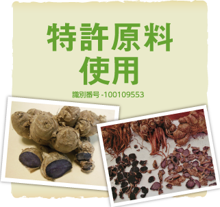
- 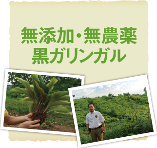
- 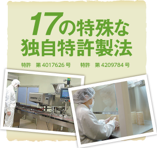
- 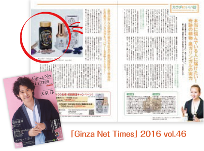
- 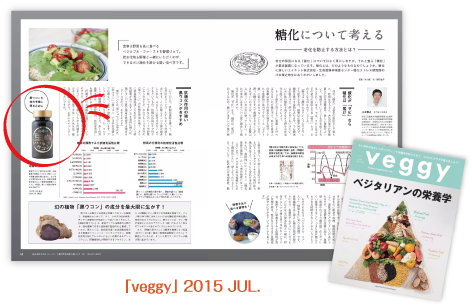
現在の医学は様々なデータをもとに
自然界に存在する成分を活かして治療する 方向へシフトしていきます。人類が誕生するはるか昔からこの地球に存在し、生きて植物には、人間には計り知れない能力が備わっているのでしょう。
特にガンや認知症といった、現代医学では確定的な治療方法が見つかっていない病気には、これら
植物の力が不思議に作用することが様々なデータと共に
世界的に認識されています。
しかし、大量生産の結果、野菜を含め、多くの植物の栄養素が減少しているのも事実です。
連作による土壌の痩化、農薬の大量散布、工場による水汚染等々・・・ 近年の健康志向とはかみ合わないのが現状です。
この黒ガリンガルは、東南アジアの、近隣に工場のない、一大農業地 帯で、昔ながらの方法と 無農薬で丁寧に育てられています。私も農場 を訪れましたが土質もすばらしく､とても広い工作面積で育てられて いました。こういった条件は今の日本では考えられないことです。
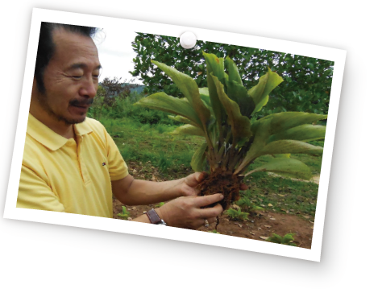黒ガリンガルは、東南アジア特有の気候と土質のみ育つ貴重な植物です｡その実力はまだ研究され尽くしていませんが､
計り知れない可能性を秘めています｡数千年もの伝統医療で利用されてきましたが､あまりの希少性ゆえに､安定供給が難しく､その存在が日本まで知られることはほとんどありませんでした。
RENEの農場産の黒ガリンガルは､
数々の豊富なアミノ酸を含み､またそれらの栄養素の絶妙なコンビネーションによる結果が､私の研究室でも確認されています。
また､
自社農園できちんとした日本品質の管理のもと育てられていることは､口から摂取することを考えますと､安心と信頼にも繋がることです。
- 同志社大学大学院脳科学研究科教授･薬学博士
- 1942年東京都出身
- 1961年エーザイ(株)入社後､創薬研究チームリーダーとして血圧降下剤の創薬に成功｡
- その後､母親の認知症をきっかけにアルツハイマー病治療薬の開発に取り組み､現在も世界で一番使用されている､アルツハイマー病進行抑制薬である｢アリセプト(塩酸ドネペジル)｣を創薬する。
- 創薬第一研究所所長などを経て2003年定年退職､京大大学院薬学研究科の寄付講座｢創薬神経学講座｣教授となり､ 同研究科の｢最先端創薬研究センター｣客員教授として､ノーベル賞受賞者田中耕一さんらとアルツハイマー病の新たな診断･治療法研究に取り組む｡｢薬のノーベル賞｣といわれる英国ガリアン賞､恩賜発明賞などを受けている。
-
家族みんなで楽しく食卓を囲む､最高の幸せです。
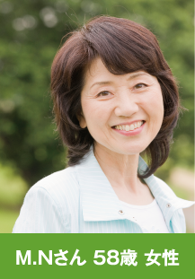82歳の母は､10年ほど前から認知症ともうつ病とも思える症状があり､不安定な様子でした｡徘徊やトイレの心配はなかったものの､ うつむきがちで顔にも生気がなく､言葉もなかなかで出てこない状況｡
私は目を離すことができずだんだん疲弊していきました｡そんな時に出会ったSuper黒ガリンです｡
正直驚いています!あの母はなんだったんだろう?って感じです!母に早速飲んでもらいました｡ 一日3粒が目安と書いてあったので､食前に1粒ずつ飲んでもらうようにしました｡食前にした 理由は､飲み忘れを防げるからです｡でも､友人から､食前の方が何も食べていない状態なので吸収力があがるから良いらしいよと言われたのでその飲み方で良かったみたいです｡
飲み続けて3週間くらいたったら､夜も落ち着いているようだし､昼ご飯を食べている時も元気そうだったりと変化が出てきました｡ 体もシャンとして足もスムーズに動くようで､エスカレーター前で立ち往生することもなくなりました｡母の変化に家族全員で驚くばかり｡本当に感謝しています｡ 今では言葉もすっと出てくるようになって会話が増え､時には冗談を言うことも｡ 楽しく家族で食卓を囲むことができています｡ 一時はこのまま悪くなっていく一方だと考えていたので､本当に感謝しています。
-
あんなに辛かったのに今では時間も気にせず
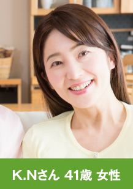
楽しくショッピングも夫の両親と同居をしていますが、変化に気が付いたときは驚きとどうしていいか不安でいっぱいでした。
会話をするなど努めていましたが、よくなっているのかはわからず自分の時間だけが無くなっていきました。毎日頑張っていましたが、義父はだんだんと変わっていくようになり、同じ失敗を繰り返したり、 食事に執着しだしたり。
義母は健在でしたが、高齢の為、１人で任せておくこともできずどうしていいかわからなくなっていました。このような生活の中で娘との生活にも影響してきました。昔は休日には良くショッピングに行ったり一緒に出掛けていましたが行くことができなくなっていました もちろん私の友人のお誘いもすべて断るようになっていました。
いったいいつまでこんな生活が続くのかと不安な毎日を過ごしているそんな中、同じ悩みを持っていた友人の紹介で出会ったのがSuper黒ガリンでした。
飲み始めてからしばらくたつと､よく笑うようになったり､ぼんやりすることがすくなくなりました｡ 本人もそれを感じているようで家 族全体が笑顔を取り戻せるようになり、今では一緒に出掛けることもあるくらいです。
今は飲み始めてから半年くらいですが、義父が冗談を言ったりして家族で笑い合っています。まだ先はわかりませんが、義両親の笑顔はやっぱり嬉しいですし、何だか義母も元気になってきました。 私も、念願の同窓会へ先日行ってきました。 懐かしい旧友に会えてとても楽しい時間を過ごせました｡同じように親の世話をしている友人も結構多く､情報交換したり共感し合ったりして、それも良かったです。
Super黒ガリンの話をしたら､試してみようかなって言っている友人もいました｡それから､娘とのショッピングしながらファッションの話をしたりして、本当に自分の時間が増えて充実しています。 もっともっと父と母の笑顔が増え家族の幸せな時間を大切にできたらと思います。 -
穏やかな時間を取り戻し、
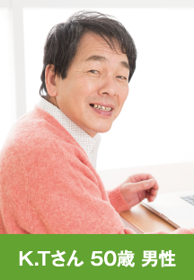
家族みんなが笑顔を取り戻しました。私は両親と一緒に暮らしているのですが毎日忙しく、母の変化に気付いた時には驚きとショックで今でも忘れられません。
はじめはなんかおかしいななっと感じる程度でしたが、変化が確信に変わったときまさかという気持ちでいっぱいでした。
ぼーっとしたり、同じ失敗を繰り返す回数が増えていったのです。
１人で出かけるときは心配で、場合によっては後をつけていかなければならないほどでした。色々試してみましたがよくなる兆しは見えずあきらめかけていたところ黒ガリンに出会いました。
はじめは半信半疑でしたが少しでも良くなればと試し始めましたところ､ぼーっとすることが少なくなり､しっかりとしてくれるようになったんです。
冗談なども言うようになり家族みんなの心の中が明るくなりました。穏やかな時間を取り戻せるとは思っていなかったので本当にありがたいです。このようなことがあり、より家族を大切に思うことができたことも感謝しています。 少しでも以前の生活に戻って行けるよう、さらに期待をしています。

東南アジアの平均寿命が50代という中で、ひょいっとピックアップトラックの荷台に飛び乗り、元気に農作用に出かける
80歳がいる｡70代後半で｢父親｣になる。
私たちの生活からはかけ離れているこれらのエピソードは、東南アジアのとある村で本当に起きている話なのです。常識
外れの若々しさを手に入れているその村の人々には、秘密がありました。
それは地元の人々が｢山の神様の贈り物｣として､1,200年前から愛用している生薬｡黒ガリンガルでした｡
このエピソードは私が実際に東南アジアのある村で目撃したことです。その村では､見た目も若く､足腰も丈夫で生き生きと毎日を楽しむ人ばかりです｡ しかも寝たきりになっているお年寄りがいない｡｢どうしてだろう?｣という疑問の答えが黒ガリンガルでした。
病院施設などがないその村で、万能薬として古くから親しまれているもので、健康食品として定番となった「ウコンの親戚」ともいえる植物です。 しかし含まれている成分は異なり、そのパワーは驚くべきものでした。
黒ガリンガルは、東南アジアの限られた土地でしか育たない植物。商品化するには、実に10年もの歳月がかかりました。 現地の信頼を勝ち取るまでに7年｡そして､自給自足しかしていなかったり黒ガリンガルを商品化の為に栽培してもらう体
制を整えるまでに3年。
何度も何度も足を運び、コミュニケーションを取り、その村の考え ややり方に歩み寄り、ようやく完成したのが「Superガリンガル」です。
肥料も農薬も使わず、一度収穫したらその土地を5年休めるという非効率としか言えない農法。古来の栽培方法を守るがゆえに採れる最高の黒ガリンガルを真空低温乾燥システム（特許取得）で粉末にしています。
黒ガリンガルはとても繊細で、外的影響をとても受けやすい植物｡例えば､ウコンと一緒の場所に植えると､ウコンに変化してしまうほどです。つまり、酸化や熱にとても弱いということ。
製品化の道のりは厳しく､研究を重ねた結果､17の特殊な独自製法を開発して特許を取得｡ 黒ガリンガル唯一の原料に､ 余計なものを足すこともなければ､製造過程で大切な成分が失われない工夫も｡生息地付近の人が生で食べるそのままともいえる状態の粉末をカプセルに詰めました。
- 繰り返される同じ話に悩まされるようになった。
- 家族のケアによって､自分の時間が確保できない。
- 家族で仲良く､穏やかに暮らすことはできないか?
- 状況は､このままよくならないのか?
- 家族へのケア方法は､今の方法で正しいのか?
- 最近､家族が変わってしまった。
- 家族の世話に､心身共にそろそろ限界。
- この状況がいつまで続くのか､先が見えない。
- もう打つ手は何もないのか?
なぜ､元気な高齢者と介護が必要な高齢者がいるのだろう?
加齢に伴い､誰でも身体能力･脳機能は衰えてゆくも
のです｡つまり､｢物忘れ｣は自然な老化現象の一種で
あって､介護に直結する症状ではありません｡
一方、認知症は単なる｢物忘れ｣ではありません｡
｢脳の神経細胞の破壊｣によって発症する為､次第に
スムーズな日常生活を送れなくなってしまいます｡
そもそも｢認知症｣は
どうしたら起こるの?
そもそも脳の仕組みとは
- 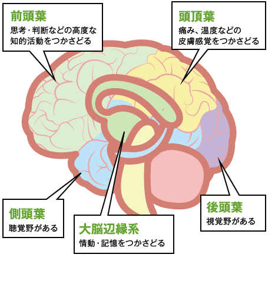
- 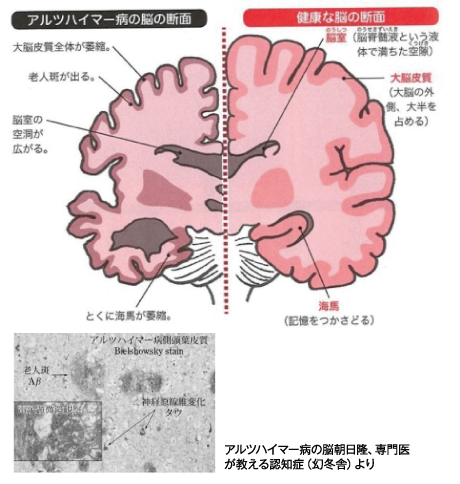
そもそも脳の仕組みとは
- 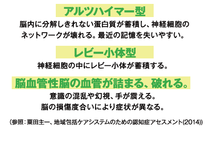
- 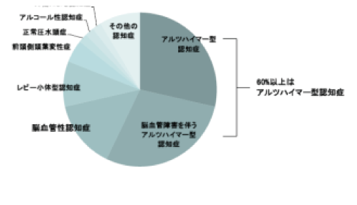
アルツハイマー型の認知症の主な要因
-
アミロイド
前駆体
蛋白質
-
蛋白質の
切断 -
アミロイドβ
蛋白質
(Aβ)
-
蛋白質の
凝縮･蓄積 -
老人班
-
細胞の毒性
-
神経細胞の
死 -
※アルツハイマー型認知症の原因物質とされるアミロイドβたんぱくの前駆体として知られるたんぱく質
前駆体とはある化学物質について､その物質が生成する前の段階の物質のことを指す。
アルツハイマー型の認知症
認知症の割合として最も多いアルツハイマー型認知症は､脳にアミロイドベータというたんぱく質がたまり正常な神経細胞が壊れ、脳萎縮がおこることが原因
だといわれていま す。しかしながら､アミロイドベータが蓄積する原因については明確なことは分かっていません。
アルツハイマー型認知症の発症にはこれまで加齢や遺伝が関係
するということは明らかになっていましたが､それに加えて近年､糖尿病や高血圧などの方はそうでない方よりもアルツハイマー型認知症になりやすいことが科学的に証明されました｡
そのため､予防には生活習慣の改善が重要であるとされています｡
また､蛋白質の凝縮を防ぐため｢血流をよくする｣神経細胞の死を抑えるため「抗炎症の作用｣そもそもの
「情報伝達物質（セチルコリン）の増加」など様々な健康食品が販売されています。
そもそも黒ガリンガルとは?
黒ガリンガルとは?
東南アジア山岳地帯原産(本来は野生種)ウコンや生姜のいとこにあたる別種植物"黒" というけれど、本当は"濃い紫色"の根茎。
限られた気候と土壌でしか栽培できない
希少な植物で東南アジアでも一部の地域しか栽培不可な植物です。
外的影響をとても受けやすい植物で例えば､ウコンと一緒の場所に植えると､ウコンに 変化してしまうほどです｡つまり､酸化や熱にとても弱い植物なのです。
-
東南アジア特有の気候と土質でしか育たないため､その実力は日本ではまだ研究されていません。
当社では各大学等に成分解析を依頼し､機能評価､データによる分析を行っております。
その研究の中で●●という成分の特許を取得しております。
-
 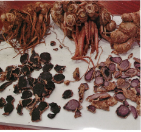
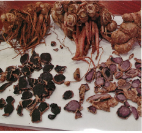黒ガリンガルはとても繊細で､外的影響をとても受けやすい植物です｡例えば､ウコンと一緒の場所に植えると､ウコンに変化してしまうほどです｡ つまり､酸化や熱にとても弱いということです。
そのため､製造過程で大切な成分が失われないようにするため､17の特殊な独自製法を開発して､製法特許取得しました。
製法特許取得の真空低温乾燥システムにより黒ガリンの酵素を100%生きたまま抽 出し、生息地付近の人が生で食べるそのままともいえる状態の粉末をカプセルに詰め、多種多様の栄養成分を丸ごと摂ることが可能になりました。 -
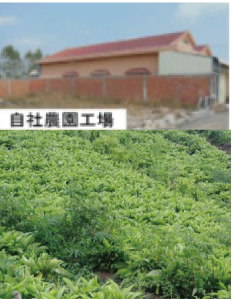
原産地の東南アジアの自社農園において､日本人農業技術者の指導のもと栽培し た非常に高品質で安全な原料をお届けしております｡
原産地の東南アジアの自社農園において､日本人農業技術者の指導のもと栽培した非常に高品質で安全な原料をお届けしております。
肥料も農薬も使わず､一度収穫したらその土地を5年休めるという非効率としか言えない農法ですが、 古来の栽培方法を守るがゆえに採れる最高の黒ガリンガルを真空低温乾燥システム(特許取得)で粉末にしています。
※1品質保証の国際規格
※2「FSSC22000」（Food Safety System Certification
とは食品安全マネジメントの国際規格ISO22000および食品安全のための前提条件プログラムPAS22（ISO/TS22002-1）と追加要求事項を統合した新しい食品安全システムの国際規格です。
この認証を取得を購買基準や推奨とする食品メーカーが増加しており、食品安全の判断基準となりつつあります。
「Super黒ガリン｣は毎日続けられる｢健康食品｣です｡
お薬ではないので､いつでも安心してお召し上がり頂けます｡
しかし、吸収を高める空腹時の摂取をおすすめします。
また､1日3粒（目安）の摂取がおすすめです。
- 副作用はありますか？
- ― 基本的にありませんが、お腹がゆるくなる方もいらっしゃいます。
- 薬と併用しても大丈夫ですか？
- ― 血液をサラサラにするお薬(ワーファリン等)を飲まれている方は､医療機関にご相談いただくか､1日3粒 以内の服用をおすすめします。
- 妊娠・授乳中でも大丈夫ですか？
- ― 安心してお召し上がりいただけます｡添加物は一切入っておらず､原料の黒ガリンガルを栽培するにも農 薬・肥料も使用しておりません。
- 賞味期限はどのくらいですか？
- ― 概ね1年間です｡ボトルに記載がありますので､お手元に届きましたらご確認ください｡